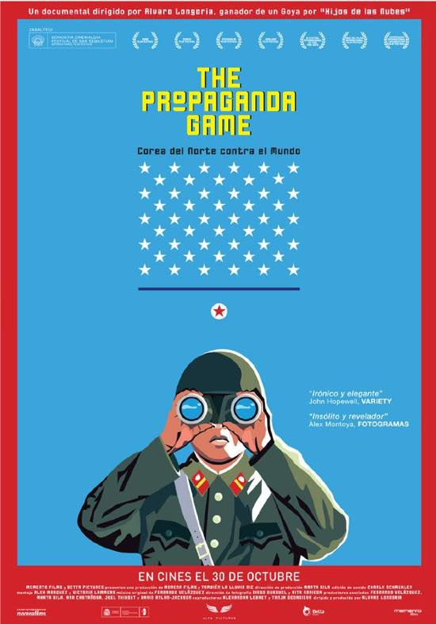
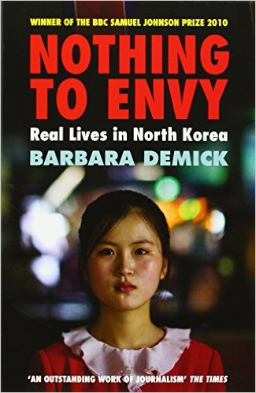

주말에 잉여력 폭발(?)해서 영화보고 유튭 비디오 편집하고 뒹굴고있습니다.
확실히 해외나오면 우선 생활이 굉장히 심플해지고 + 북한 소식은 국내에 있을때보다 더 많이 듣는거 같아요
처음 영쿡회사 들어갔을때 한참 사무실내 'Nothing to envy' 를 돌아가면서 읽는게 붐이어서
저한테까지 차례가 돌아왔는데 모두들 나의 의견을 무척이나 궁금해 했었더랬죠;;

한번 읽어볼만 합니다. 추천이에요
다시 어제 본 프로파간다 게임으로 돌아가서
호기심에 보기시작했는데 마지막 5분이 강렬하네요
모두가 알고있는 사실을 다시한번 확실하게 확인시켜주는것 같기도하고
진정 isolated 된 나라가 되어 가는거 같기도 하고 그럽니당
우리 모두가 게임에 참여하고있다.
커갈수록 모든 문제들이 이해관계가 복잡시렵게 얽혀있고 스위치 on/off 하듯 한방에 해결되는게 아니라는것만 깨달아 갑니당 :s